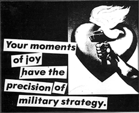
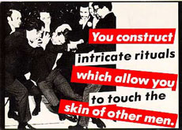
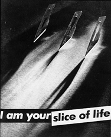

Barbara Kruger's Accusations

Untitled ("Your moments of joy have the precision of military strategy"), 1980
Untitled ("Your manias become science"), 1981
 Untitled ("You construct intricate rituals which allow you to touch the skin of other men"), 1981
Untitled ("You are not yourself")
Untitled ("Your comfort is my silence"), 1981

Untitled ("I am a slice of your life"), 1981